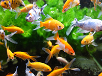

Durham House of Pets



About Us
Durham House of Pets is on a mission to provide cats, dogs, and fish with the highest quality supplies and food.
Our History
Durham House of Pets began with one man's dream to offer a premium pet food store in Durham, NH. Since opening the first store, Durham House of Pets has expanded to all of New England with regional offices in Rhode Island, and Maine. We have also expanded our products offering to include dog apparel, cat toys, and fish tanks.